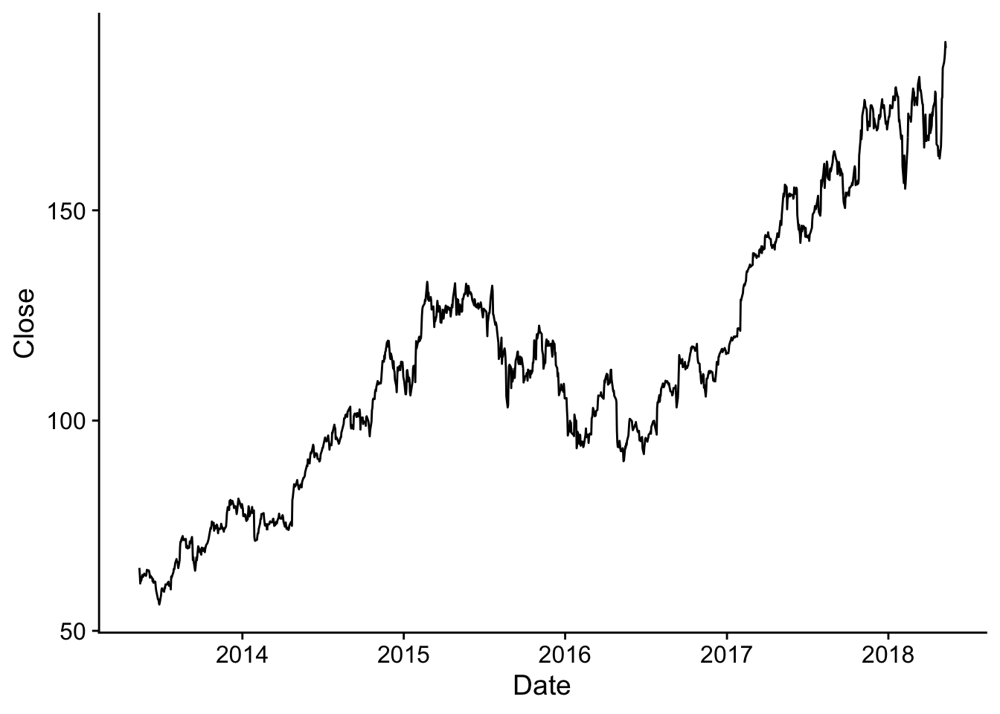

---
title: "A line graph of Apple stock close prices"
author: "Martin C. Arnold"
format:
html:
css: styles.css
code-fold: false
---Simple recipes for three basic Observable plot types in Quarto
Spiced with some R
Click here to see the source of this HTML document.
Observable offers many different ways to graph your data, but the line chart, bar chart, and scatter plot are basic and should definitely be learned. Tremendous flexibility and customisation are possible for such charts, but in this article we will cover only the simple cases–inspired by the ones presented here–and focus on integrating them into a simple Quarto document such that data can be manipulated and provided using R.
Preliminaries
The .qmd file for generating this document has the following YAML header.
styles.css contains the following CSS code for centering SVG elements in their enclosing divs.
div > svg {
margin-left: auto;
margin-right: auto;
}Observable plots are shown in SVG elements. Centering these is personal preference and thus optional 🙂.
We will make use of the below R packages.
library(tidyverse)
library(cowplot)
library(reactable)Line chart
We may to attach external data for Observable plots in a chunk with header ```{OJS} and use the FileAttachement() function. Below ee use the .csv method since the we’re dealing with a .csv file. The code below assumes that aapl.csv is in the same folder as the .qmd file. The .csv is attached with the observable notebook linked above.
Note that there’s no need to include any JavaScript libraries in the document or chunk header–Quarto takes care of it!
/* in OJS we would do it like this */
data = FileAttachment("aapl.csv")
.csv({typed: true});We may now graph the data. Note that in line we set dimensions of the SVG element in line 2 using width: 600, height: 400.
Plot.plot({
width: 600, height: 400,
marks: [
Plot.ruleY([40]),
Plot.lineY(data, {x: "Date", y: "Close"})
]
})Here’s an R version of the plot:
R_data <- read_csv(
"aapl.csv"
)
ggplot(R_data,
aes(x = Date, y = Close)
) +
geom_line() +
theme_cowplot()
Bar chart
Similarly we may generate bar charts. Note that the dataset alphabet does not have to be included externally, because it is already available with the OJS library.
Plot.plot({
width: 600, height: 400,
y: { label: "freq" },
marks: [
Plot.barY(
alphabet,
{x: "letter", y: "frequency", sort: {x: "y", reverse: true}}
),
Plot.ruleY([0])
]
})alphabet datasetScatterplot
The dataset cars (I think it’s the same data as in the popular R dataset) also comes with the OJS library . We create the scatterplot as follows:
Plot.plot({
width: 600, height: 400,
marks: [
Plot.dot(cars, {x: "power (hp)", y: "economy (mpg)"})
]
})cars datasetManipulating data with and supplying it using R
Let’s play with the iris data in R and then make it available to Observable.js (OJS). We first allow users to glimpse at the data using reactable.
reactable::reactable(iris)Next, we summarise variables by species (by computing group means for all variables in the datset).
iris_means <- iris %>%
group_by(Species) %>%
summarise_all(.funs = mean)R-data is made available to OJS using ojs_define().
ojs_define(
iris = iris,
iris_means = iris_means
)We may check that these data are indeed available to Observable: they are objects that hold multiple arrays. The following statements are evaluated in ojs chunks.
irisiris_meansFor the data to be “compatible” with Observable plot we need to transpose(). Below we plot Sepal.Length and Sepal.Width colored by Species and add marks for their group means.
iris_plot = Plot.plot({
width: 600, height: 400,
marks: [
Plot.dot(
transpose(iris), {
x: "Sepal.Length",
y: "Sepal.Width",
fill: "Species",
r: 3
}),
Plot.dot(transpose(iris_means), {
x: "Sepal.Length",
y: "Sepal.Width",
fill: "Species",
r: 6
})
]
})
/* add legend for color */
iris_plot.legend("color")D3.js
d3 = require("d3@7")
// Copyright 2021 Observable, Inc.
// Released under the ISC license.
// https://observablehq.com/@d3/histogram
function Histogram(data, {
value = d => d, // convenience alias for x
domain, // convenience alias for xDomain
label, // convenience alias for xLabel
format, // convenience alias for xFormat
type = d3.scaleLinear, // convenience alias for xType
x = value, // given d in data, returns the (quantitative) x-value
y = () => 1, // given d in data, returns the (quantitative) weight
thresholds = 40, // approximate number of bins to generate, or threshold function
normalize, // whether to normalize values to a total of 100%
marginTop = 20, // top margin, in pixels
marginRight = 30, // right margin, in pixels
marginBottom = 30, // bottom margin, in pixels
marginLeft = 40, // left margin, in pixels
width = 640, // outer width of chart, in pixels
height = 400, // outer height of chart, in pixels
insetLeft = 0.5, // inset left edge of bar
insetRight = 0.5, // inset right edge of bar
xType = type, // type of x-scale
xDomain = domain, // [xmin, xmax]
xRange = [marginLeft, width - marginRight], // [left, right]
xLabel = label, // a label for the x-axis
xFormat = format, // a format specifier string for the x-axis
yType = d3.scaleLinear, // type of y-scale
yDomain, // [ymin, ymax]
yRange = [height - marginBottom, marginTop], // [bottom, top]
yLabel = "↑ Frequency", // a label for the y-axis
yFormat = normalize ? "%" : undefined, // a format specifier string for the y-axis
color = "currentColor" // bar fill color
} = {}) {
// Compute values.
const X = d3.map(data, x);
const Y0 = d3.map(data, y);
const I = d3.range(X.length);
// Compute bins.
const bins = d3.bin().thresholds(thresholds).value(i => X[i])(I);
const Y = Array.from(bins, I => d3.sum(I, i => Y0[i]));
if (normalize) {
const total = d3.sum(Y);
for (let i = 0; i < Y.length; ++i) Y[i] /= total;
}
// Compute default domains.
if (xDomain === undefined) xDomain = [bins[0].x0, bins[bins.length - 1].x1];
if (yDomain === undefined) yDomain = [0, d3.max(Y)];
// Construct scales and axes.
const xScale = xType(xDomain, xRange);
const yScale = yType(yDomain, yRange);
const xAxis = d3.axisBottom(xScale).ticks(width / 80, xFormat).tickSizeOuter(0);
const yAxis = d3.axisLeft(yScale).ticks(height / 40, yFormat);
yFormat = yScale.tickFormat(100, yFormat);
const svg = d3.create("svg")
.attr("width", width)
.attr("height", height)
.attr("viewBox", [0, 0, width, height])
.attr("style", "max-width: 100%; height: auto; height: intrinsic;");
svg.append("g")
.attr("transform", `translate(${marginLeft},0)`)
.call(yAxis)
.call(g => g.select(".domain").remove())
.call(g => g.selectAll(".tick line").clone()
.attr("x2", width - marginLeft - marginRight)
.attr("stroke-opacity", 0.1))
.call(g => g.append("text")
.attr("x", -marginLeft)
.attr("y", 10)
.attr("fill", "currentColor")
.attr("text-anchor", "start")
.text(yLabel));
svg.append("g")
.attr("fill", color)
.selectAll("rect")
.data(bins)
.join("rect")
.attr("x", d => xScale(d.x0) + insetLeft)
.attr("width", d => Math.max(0, xScale(d.x1) - xScale(d.x0) - insetLeft - insetRight))
.attr("y", (d, i) => yScale(Y[i]))
.attr("height", (d, i) => yScale(0) - yScale(Y[i]))
.append("title")
.text((d, i) => [`${d.x0} ≤ x < ${d.x1}`, yFormat(Y[i])].join("\n"));
svg.append("g")
.attr("transform", `translate(0,${height - marginBottom})`)
.call(xAxis)
.call(g => g.append("text")
.attr("x", width - marginRight)
.attr("y", 27)
.attr("fill", "currentColor")
.attr("text-anchor", "end")
.text(xLabel));
return svg.node();
}
unemployment = FileAttachment("unemployment-x.csv").csv({typed: true})
chart = Histogram(unemployment, {
value: d => d.rate,
label: "Unemployment rate (%) →",
width,
height: 500,
color: "steelblue"
})